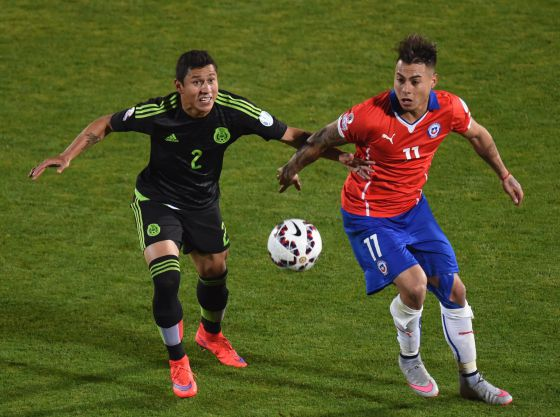

México empata con Chile en Copa América
16/Junio/2015
En un partido jugado a todo gas, Chile y México empataron (3-3) este lunes en su segundo encuentro de la fase de grupos de la Copa América 2015. Tres goles para cada uno, con más presencia y más llegada de Chile, el anfitrión del campeonato y con la vitola de favorito. México, con una selección devaluada por no contar con sus máximas estrellas, venía de empatar a cero en su primer partido contra Bolivia. Los del Piojo, con cinco defensas y sus delanteros revolucionados, lograron sin embargo compensar el mejor juego de Chile.
Chile empezó dominando, con la defensa a un palmo del centro del campo. Pero los ataques de la Roja se entrampaban una y otra vez en la telaraña de cinco defensas del Tri. Chile tocaba y amenazaba el área mexicana, defendida por acumulación. La respuesta al frontón eran las contras centelleantes de México, que golpeó primero con un gol de Vuoso.
La réplica de Chile fue inmediata. El embudo de su ataque se ensanchó con un juego más profundo por las bandas. Apenas un minuto y medio después, Vidal, el mejor jugador del encuentro, remató en un cabezazo duro y limpio para empatar. México, en otro zarpazo, volvió a ponerse por delante. Pero la defensa sufría cada vez que Chile lograba ampliar el campo.
Con el empate a dos terminó la primera parte. Chile, dotado de futbolistas con pulmón y con piernas, dio síntomas de más brío al salir de la caseta. Vidal, esta vez de penalti, puso por delante a los suyos. La roja empezó a guardar el balón y a jugar posesiones más largas. Hasta en dos ocasiones el juego combinativo desembocó en gol, pero fue anulado por el árbitro por ajustados fuera de juego.
Cuando el encuentro parecía más volcado a favor de Chile llegó el empate de México, espoleado por la entrada del extremo Aquino. En una balón profundo a la espalda de la defensa volvió a aparecer Vuoso, que esperó paciente a que el portero se venciera para empujar a gol.